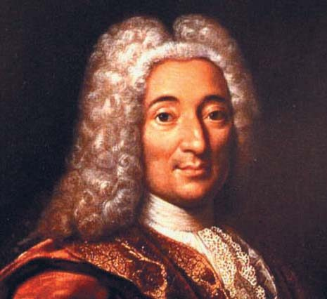
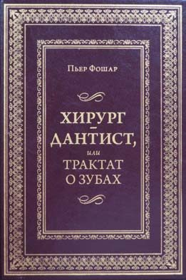
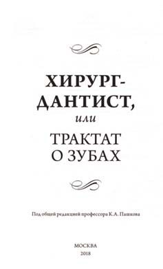
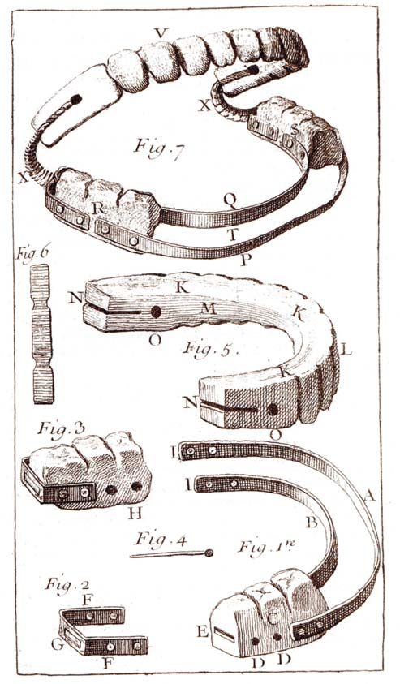
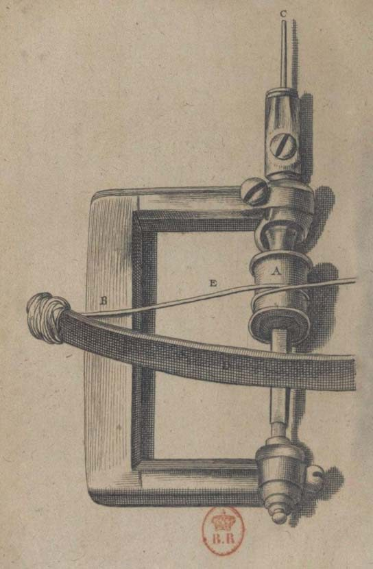
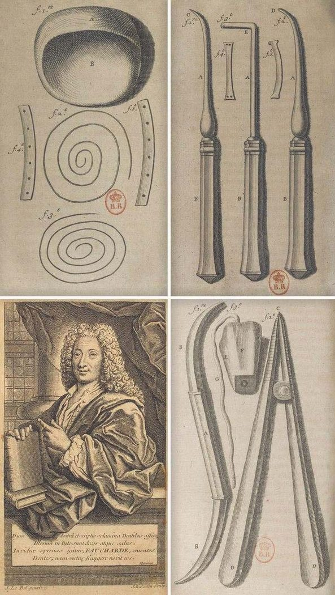
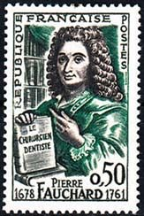
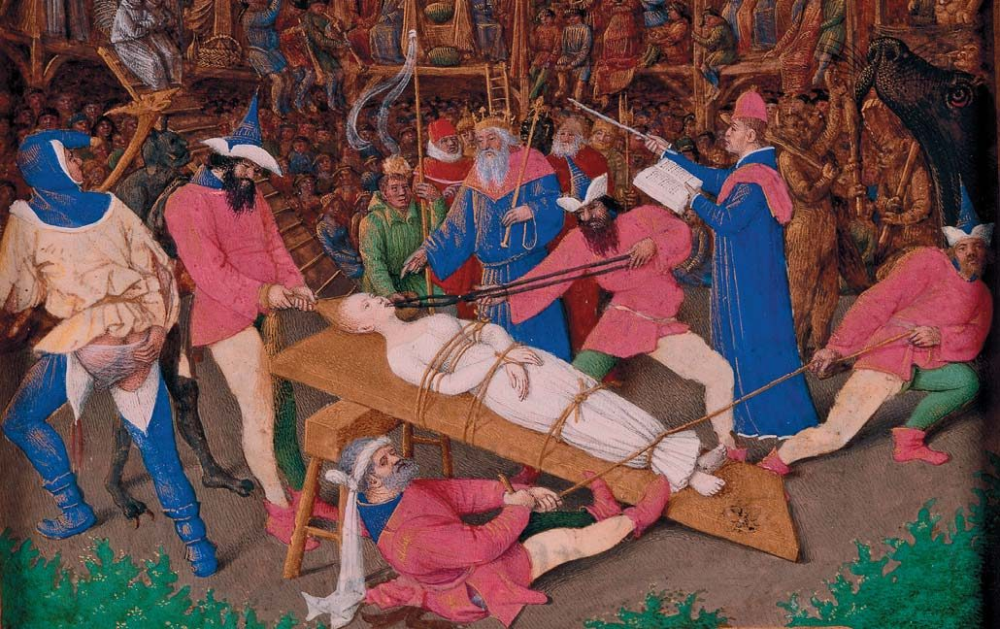

Міжнародний день стоматолога · журнал «ДентАрт» 2020 №1
Дантист, який став батьком сучасної наукової стоматології
Pierre Fauchard — the Father of Modern Scientific Dentistry
2 січня 1679 року (за новим стилем) в Анжері народилася людина, яка згодом стала практично батьком сучасної наукової стоматології. Цією людиною був француз П'єр Фошар (Pierre Fauchard). Сім'я була небагата, працював тільки батько (писарем в адвокатській конторі), а мати виховувала п'ятьох дітей. З дитинства батько повторював П'єрові, що ліпше б йому піти у лікарі, бо професія ця шанована і дуже потрібна. Ні під час війни, ні в мирний час без лікарів не обійтися, а відтак у людини завжди буде гарний шматок хліба.
П'єрові ця думка була близькою. З дитинства йому подобалося дивитися на те, з якою величчю з'являлися лікарі біля ліжка хворого і з якою повагою і надією дивилися люди на лікаря, який прийшов до хворого. Так і вийшло, що вже в 14 років, після дворічних курсів, він став помічником хірурга військового флоту, причому настільки успішним, що його невдовзі запросили у військово-морський госпіталь, де він здобув чудову практику, гарний дохід і престиж.
Але П'єра з дитинства вабили розкіш і вищий світ. І тоді він надумав, як досягти цього. Цілком правильно вважаючи, що бідняки зубів не лікують і не вставляють, а багаті люди, навпаки, готові платити будь-які гроші за те, щоб мати чудовий вигляд, Фошар заглибився у вивчення стоматології. Йому дуже пощастило, що в цій справі його наставником став головний хірург королівського флоту Олександр Потлере, який мало того, що був талановитим дантистом, так ще й мав велику клієнтуру з вищого світу. Він і розповів своєму учневі про те, що в Парижі всі буквально заражені манією краси і готові віддати цілий статок за якісне й естетичне протезування.
Фошар вивчив усе, що було на той момент у бібліотеках його міста і на полицях у його вчителя. І весь час намагався зрозуміти, як поліпшити процес протезування і зробити лікування стоматологічних захворювань найбільш ефективним. А от грошей на отримання патенту у нього не було зовсім. І він вирішив це питання, одружившись у 20 років з вдовою хірурга, старшою від нього на 17 років.
У 1700 році королівський декрет постановив заснувати професію дантиста. Фошар з відзнакою склав іспити і відтоді був категоричним противником дилетантства у цьому питанні. Він написав кільком найвідомішим дантистам того часу і запропонував їм спільні наукові дослідження і практику. У листах він обурювався тим, що в такій освіченій країні, як Франція, замість професійних дантистів лікують зуби всі хто хоче: цирульники, банщики і навіть кати.
У 1720 році П'єр Фошар переселяється в Париж і поступово стає особистим дантистом найвідоміших людей того часу. Серед його пацієнтів були Дені Дідро, Жан-Жак Руссо, кардинал де Флері і навіть король Людовик XV, після лікування якого Фошар став остаточно багатим та знаменитим і переїхав у величезний будинок у найпрестижнішому районі Парижа. Ціле крило будинку було виділене під зубопротезний кабінет, лабораторію і майстерню. Тут Фошар ставив експерименти, виготовляв протези і різні мазі та суміші для лікування і відбілювання. Так що його можна назвати одним з основоположників відбілювання зубів.
У 1728 році вийшла об'ємна праця «короля дантистів» під назвою «Le chirurgien-dentiste ou traite des dents» («Хірург-дантист, або Трактат про зуби»). На багато літ ця книга стала головним підручником і світочем для більшості дантистів у світі. Вона була перевидана на більшості мов, а на «Озоні» на момент написання цієї статті можна купити єдиний примірник російською мовою, що залишився.
У своїй праці Фошар описав близько 130 видів стоматологічних захворювань, класифікував їх і дав кожному чітке, сучасне для тих років пояснення. Також Фошар однозначно заявив, що хвороби зубів викликані не якимись там «зубними хробаками», як вважалося в ті часи, а зовсім іншими причинами. У своєму трактаті він описав нові способи видалення зубів, більшість з яких на той час були новаторськими, а нині стали стандартними. Наприклад, він був першим, хто не саджав пацієнтів на підлогу, щоб їм не було куди падати під час видалення, а розробив спеціальне стоматологічне крісло з підголовником, яке пригвинчувалося до підлоги, де лікар стояв за спиною пацієнта під час роботи.
Одним з головних його відкриттів було те, що він помітив залежність захворювання карієсом зубів від кількості споживаного цукру. «Хто любить солодке, той рідко коли має гарні зуби і навіть взагалі зуби середньої якості. Ось чому потрібно після того, як поїси цукерок, прополоскати рот теплою водою, щоб розчинити те, що застряло між зубами і яснами», — писав П'єр Фошар.
Трактат став найкращим підручником стоматології ще й тому, що в той час, як більшість дантистів ревно оберігали свої напрацювання і ніколи не ділилися ними з конкурентами, П'єр Фошар докладно описав усі відомі йому новітні методики лікування зубів.




Фошар винайшов фіксацію протезів на пружинах, адже тоді не було іншого способу утримати в роті знімні протези. Саме П'єр Фошар винайшов штифтові зуби і мостовидні протези. Сама система використовувалася ще древніми етрусками, але Фошар довів її до досконалості. Він ретельно видаляв пульпу з каналу зуба, виготовляв точні відтиски, за якими потім робилися добре прилеглі до каналу штифти, а на них уже цементувався сам протез.
П'єр Фошар першим став підбирати колір зубів дамам з вищого світу так, щоб їх не можна було відрізнити від рідних зубів. Зуби тоді виготовлялися із зубів мертвих людей, іклів моржів та гіпопотамів, слонової кістки. Багаті аристократки були готові чекати його прийому місяцями, а то й роками, тільки б він зробив їм ідеальну білозубу усмішку.
Одним із найгеніальніших його винаходів були золоті ковпачки на зуби, покриті емаллю. Фактично це були перші металокерамічні коронки, що дозволяли отримувати фантастичну для того часу естетику.
Але й цього мало, щоб описати заслуги П'єра Фошара перед стоматологією. Він не лише лікував зуби, але й навчився пересувати їх на потрібне місце. Фошар був першим, хто відмовлявся видаляти зуби, що виросли неправильно, а за допомогою спеціальних пристроїв з дроту і пластинок зі срібла й золота ставив зуби на місце. Тому ортодонти всього світу вважають його родоначальником ортодонтичної стоматології.
Фошар винайшов безліч різних стоматологічних інструментів, лампи з фокусованим світлом, спеціальне стоматологічне крісло і багато-багато іншого, без чого сьогодні стоматологи не уявляють своєї роботи.
Свята Аполлонія — покровителька стоматологів
До речі, саме П'єрові Фошар ми зобов'язані не тільки тим, що якісно працюємо, але ще й професійним святом. У 249 році від Різдва Христового померла Аполлонія, визнана згодом святою. Легенда свідчить, що за часів гонінь на християн Аполлонія загинула у вогні.
Євсевій Кесарійський у «Церковній історії», де він наводить лист святого Діонісія I Великого, патріарха Олександрійського (248-265), адресований патріархові Фавію Антиохійскому, так описує її мучеництво: «Язичники схопили також Аполлонію, дивовижну бабусю-незайманку, били по щелепах, вибили всі зуби; влаштували за містом багаття і погрожували спалити її живцем, якщо вона заодно з ними не вимовить блюзнірських вигуків. Аполлонія, трохи помолившись, відійшла вбік, стрибнула з розгону у вогонь і згоріла».
Після визнання її святою у 300 році нашої ери Аполлонія стала дуже популярною в народі. Відома навіть картина, що зображає її муки. І хоч картина має мало спільного з істиною, вона показує, наскільки шанованою була ця свята.
Згідно з характером мук, яких вона зазнала, атрибутом святості Аполлонії стали зуби і щипці. Саме П'єр Фошар був тією людиною, яка зробила Святу Аполлонію покровителькою дантистів. До нього Аполлонії поклонялися прості люди, вважаючи, що достатньо вимовити молитву з її ім'ям — і зуби перестануть боліти. Фошар усе життя боровся за те, щоб стоматологічну допомогу надавали тільки професійні лікарі, а не звичайні цирульники і шарлатани. Для цього йому потрібен був символ, який міг би об'єднати лікарів і був би їхнім заступником і покровителем. І тоді він зробив цим символом Святу Аполлонію. Так що саме завдяки П'єрові Фошарові ми сьогодні і святкуємо 9 лютого, в день Святої Аполлонії, Міжнародний день стоматолога.




Останні роки
Ставши найвідомішим стоматологом Парижа, а може, й світу, П'єр Фошар ніколи не зраджував розпорядку дня ні для кого. Якось він сидів у театрі «Комеді Франсез», і до нього прислали гінця з проханням відвідати першого радника короля, який мучився зубами вже кілька тижнів. Фошар навіть не подумав залишати театр і взагалі намагався не ходити додому до пацієнтів, цілком справедливо стверджуючи, що йому для нормальної роботи потрібне все обладнання, яке він не може носити із собою.
У 50 років померла перша дружина Фошара, і він одружився із 17-річною актрисою, а в 1737 році у нього народився син Жан-Батист, якого батько всіляко прагнув залучити до стоматології, але хлопчик уперто не бажав цього робити, чим дуже засмучував свою родину. Адже батькові вже було непросто впоратися з величезним потоком пацієнтів.
Пацієнтів приходило стільки, що прийняти всіх особисто Фошар не міг. Тому він відкрив величезну клініку, де працювало безліч людей, яких він особисто відібрав з колишніх ювелірів, котрі пройшли медичну школу і здали йому іспити, після чого вони день і ніч працювали, виготовляючи близько тисячі зубів на рік.
Збереглися бухгалтерські книги П'єра Фошара, завдяки яким ми знаємо сьогодні сотні прізвищ його пацієнтів, які становлять цвіт французької нації. Наприклад, знаменитій маркізі де Помпадур Фошар зробив кілька зубів з дорогоцінних матеріалів, вартістю по 100 луїдорів кожен. Цілий загін мушкетерів одержував на місяць грошей набагато менше, адже всім відомий д'Артаньян отримував лише 35 су на день!
Фошар домігся присвоєння дворянського титулу і був готовий передати всі свої знання і величезний капітал рідному синові. Але саме наприкінці життя доля раптом стала повертатися до нього спиною. Син не пішов стопами батька, а став актором і взагалі все робив усупереч волі батька. Навіть прізвище Фошар Жан-Батист змінив на Гранменіль (на честь замку, в якому виховувався) і увійшов в історію саме під цим прізвищем як найкращий комік «Комеді Франсез».
У 1738 році П'єр Фошар знову став удівцем і через дев'ять років, у віці сімдесяти восьми років, одружився втретє з 18-річною ровесницею свого сина в надії все-таки народити спадкоємця. Але з цього моменту його життя взагалі стало кошмаром. Третя дружина Фошара вийшла за нього лише через гроші. Народжувати йому дітей вона не збиралася і до кінця його життя постійно судилася з ним за спадок різних родичів, доки 82-річний П'єр Фошар не помер у 1761 році, залишивши сім'ї величезні статки, але не залишивши після себе спадкоємців, котрі змогли б продовжити його справу.
І донині стоматологи всього світу шанують ім'я П'єра Фошара та його величезний неоціненний внесок у розвиток стоматології.